What Canada and the United States each offer a Chinese immigrant family — priced in real data: lottery odds, invitation scores, pay stubs, and the second generation's revenge.
The US sells a lottery ticket with a golden payout. Canada sells a transparent points test with a first-generation discount. Both, it turns out, converge on the same punchline: the kids do better than the parents — much better.
The H-1B is a raffle: employers enter, USCIS draws names, ~1 in 3 win. Express Entry is an exam: your age, degrees, language scores and work history add up to a CRS score, and IRCC invites everyone above a published cutoff.
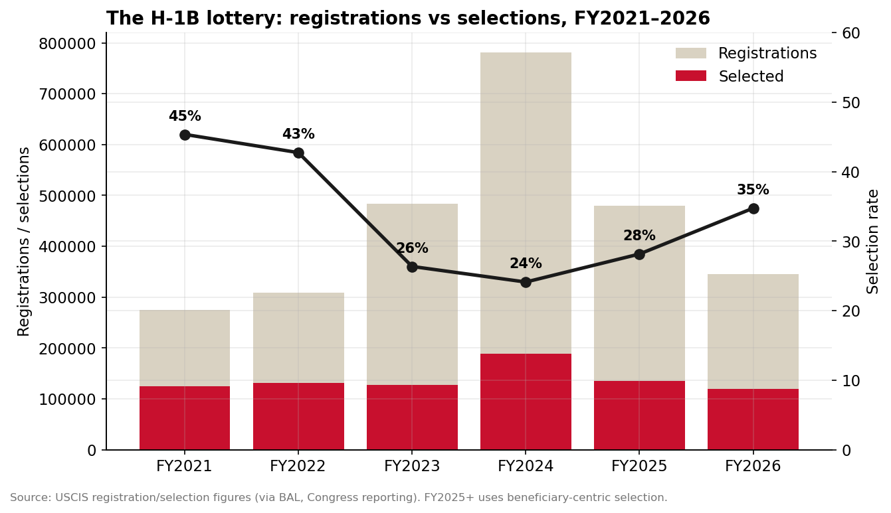
USCIS registration/selection figures via BAL & Congress reporting, FY2021–FY2026. FY2023–24 were distorted by multiple entries per worker; FY2025+ uses beneficiary-centric selection.
What does the winning ticket actually pay? From DOL Labor Condition Application disclosure data (FY2025 Q4, certified software roles at Bay Area worksites):
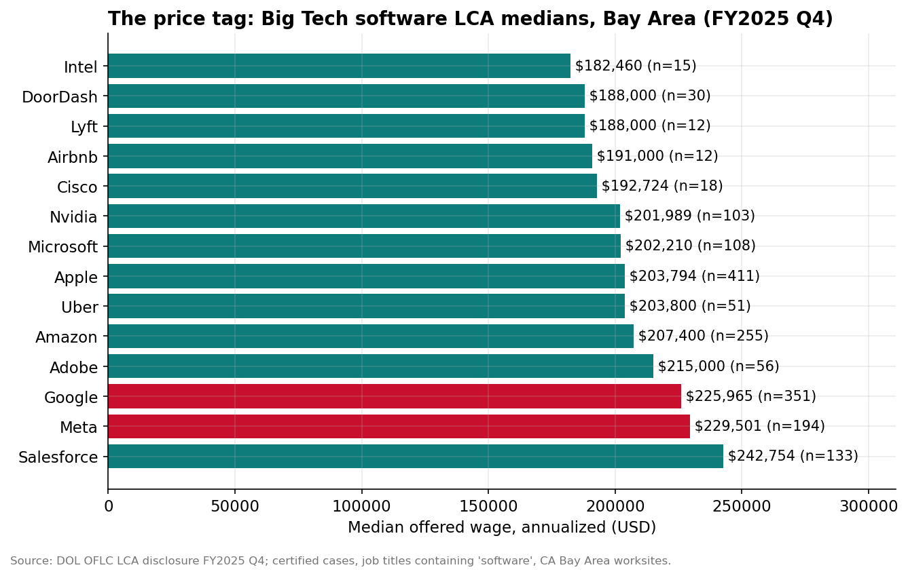
Median offered wage (annualized) on certified LCAs for job titles containing "software", California Bay Area worksites, FY2025 Q4. Source: DOL OFLC disclosure data.
Since 2020, IRCC has sent 355,035 Express Entry invitations to Indian citizens vs 51,925 to Chinese citizens. The #4 source country is Cameroon (40,585) — almost entirely the French-language lane, where 2026 cutoffs ran 382–420 against 514–523 for Canadian Experience Class draws.
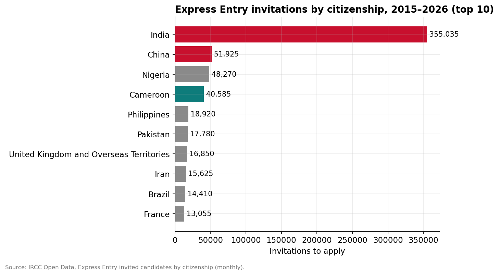
IRCC Open Data, Express Entry invited candidates by citizenship, 2015–2026 (updated monthly).
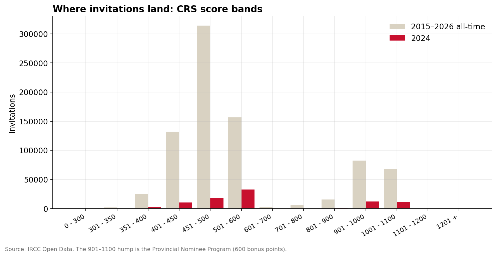
Invitations by CRS score band. The 901–1100 hump is the Provincial Nominee Program (600 bonus points); 451–600 is where general/CEC draws clear.
Punch in a profile and see its Comprehensive Ranking System score against real 2026 cutoffs. Simplified CRS (single applicant, no spouse) — indicative, not legal advice.
Cutoffs: CEC Sep 15 2026 = 519; French-language Aug 19 2026 = 382; PNP Sep 14 2026 = 734 (includes 600 nomination points). Formula: IRCC CRS criteria, single applicant.
Here's the uncomfortable number first. Chinese Canadians' median total income (2020 reference year): $32,800 vs $43,200 for non-visible-minority Canadians. In prime working years (25–54): $46,400 vs $54,400. Now split by generation:
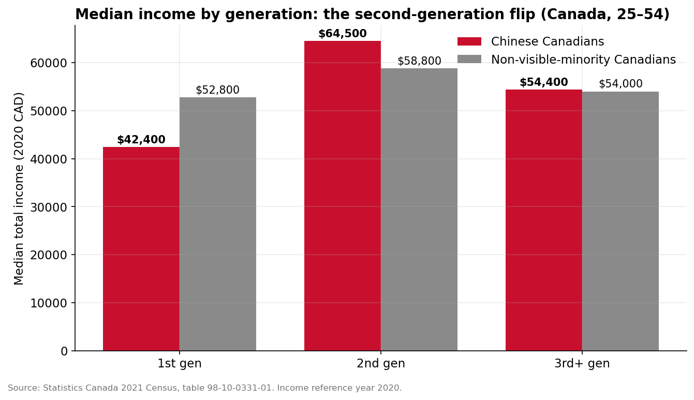
2021 Census, median total income (2020), ages 25–54. First-generation Chinese Canadians earn well below peers; the second generation flips the gap.
Compare the US, where the Asian premium shows up at the population level (ACS 2024, 5-year). The two countries' deals, side by side:
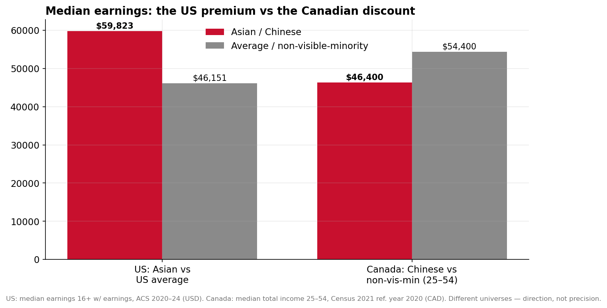
US: median earnings for 16+ with earnings (USD). Canada: median total income, ages 25–54 (CAD). Different universes and currencies — read the direction, not the precision.
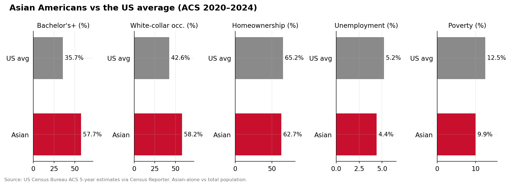
US Census Bureau, American Community Survey 2020–2024 5-year estimates via Census Reporter. Asian-alone vs total population.
57.7% of Asian Americans 25+ hold a bachelor's or higher (US: 35.7%). But degrees don't price equally across the border: among 25–54-year-olds with a bachelor's or higher, Chinese Canadians' median income is $58,400 vs $74,500 for non-visible-minority peers — a $16k credential haircut. Foreign credentials, field-of-study mix, and the first-generation discount all take their cut.
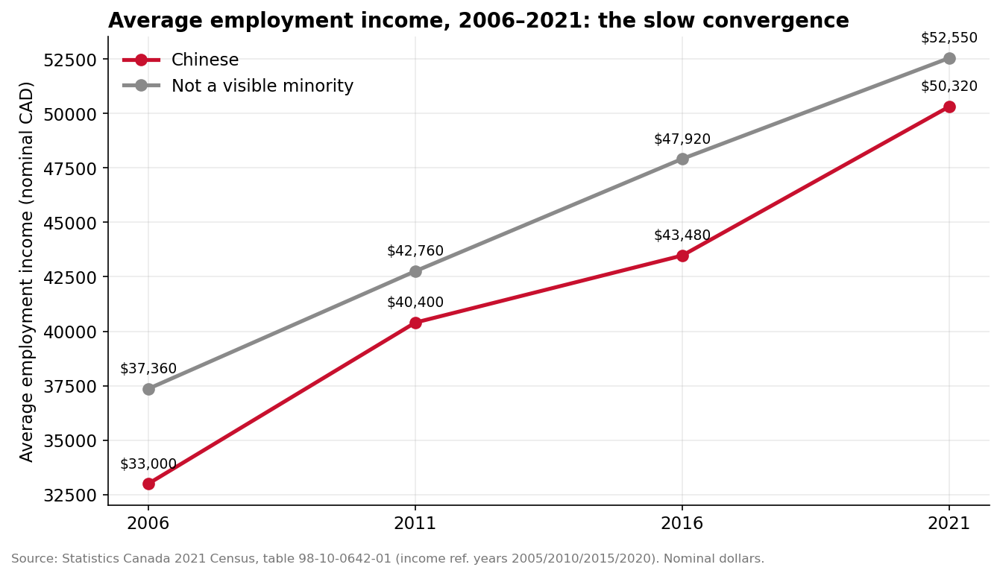
StatCan, average employment income by census year (nominal dollars). The gap narrows but persists across four censuses.
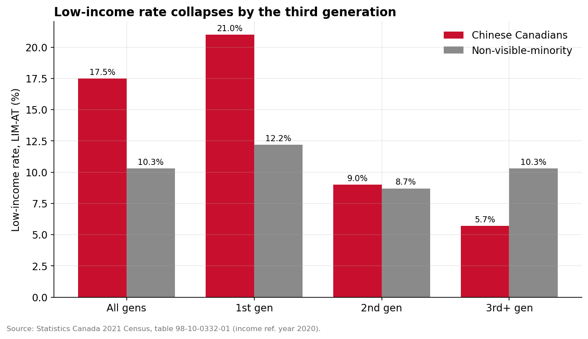
Low-income measure, after tax (LIM-AT). Chinese Canadians' low-income rate falls from 21% (1st gen) to 5.7% (3rd+ gen) — half the national rate.
I went looking for a bamboo ceiling in the Canadian data — management occupations (NOC) for Chinese vs non-visible-minority Canadians, by generation. The raw all-ages numbers tease one: second-gen Chinese trail 12.2% to 14.7%. But the second generation skews young, and management is an old person's game. Restrict to prime working years (25–54) and the ceiling vanishes:
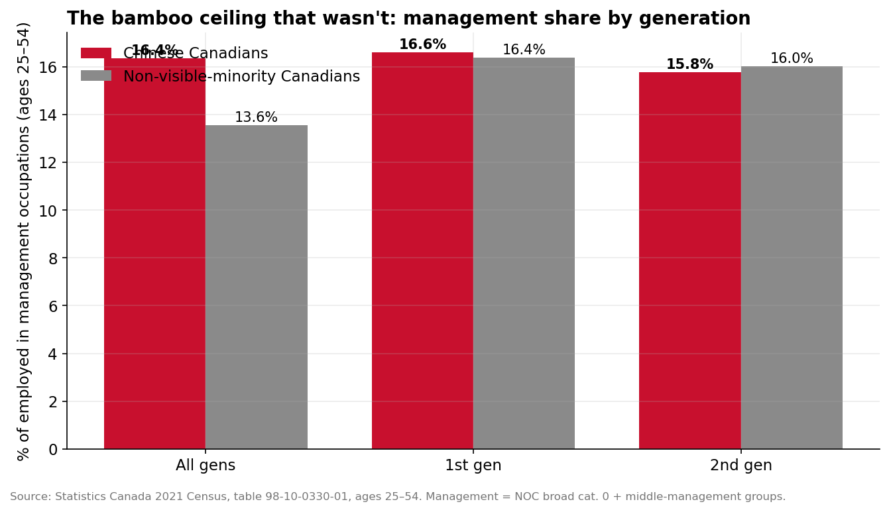
2021 Census, share of employed persons aged 25–54 in management occupations (NOC broad category 0 + middle-management groups), Canada.
On the US side, 58.2% of employed Asian Americans work in management, business, science or arts occupations vs 42.6% nationally — the pipeline is full. The remaining question both countries share: why the credentials discount persists even where the titles don't.
National averages hide the two cities where this story actually lives. In Toronto, Chinese Canadians aged 25–54 earn $48,800 vs $50,000 for the metro population — near parity. In Vancouver: $44,400 vs $50,800.
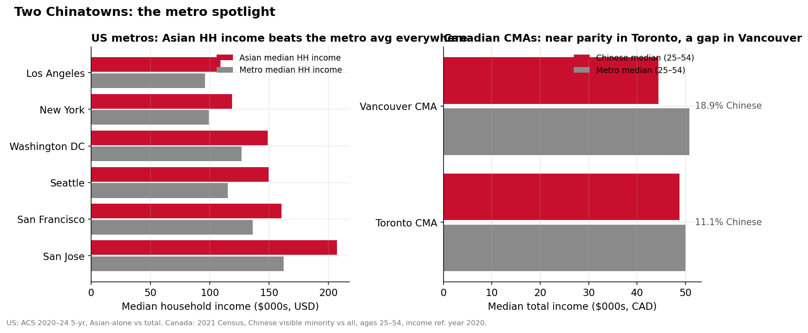
Metro comparison: Chinese population share and median incomes. US metros from ACS 2024 5-year (Asian-alone); Canadian CMAs from 2021 Census (Chinese visible minority).
Mother-tongue retention by generation — the cultural half of the ledger:
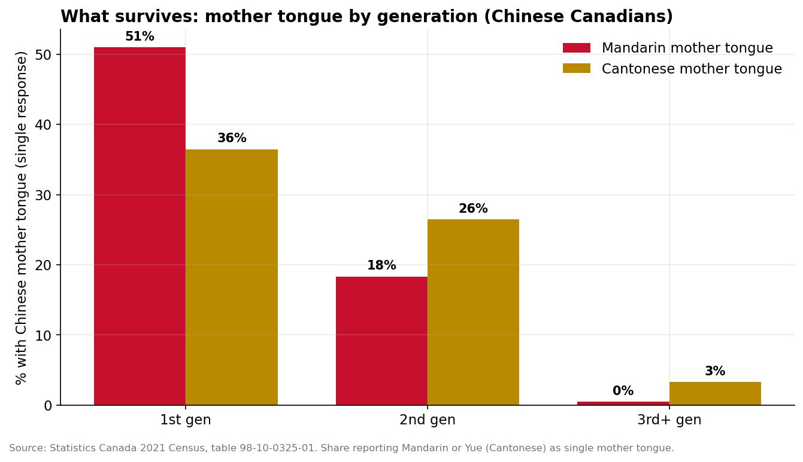
2021 Census, share of Chinese Canadians reporting Mandarin, Cantonese (Yue) or Chinese n.o.s. as (single) mother tongue, by generation status.
America's offer: a 35% lottery ticket stapled to a $200k+ Bay Area salary band, and population-level outperformance for those who get in. Canada's offer: a transparent exam where francophones get a secret discount, a real first-generation income penalty — and a second generation that beats the locals anyway.
Same grandparents. Different deal. The kids, it turns out, were the arbitrage all along.